Mutual information-based clustering analysis (MICA)
MICA is a clustering tool for single-cell RNA-seq data. MICA takes a preprocessed gene expression matrix as input and efficiently cluster the cells. MICA consists of the following main components:
- Mutual information estimation for cell-cell distance quantification
- Dimension reduction on the non-linear mutual information-based distance space
- Consensus clustering on dimension reduced spaces
- Clustering visualization and cell type annotation
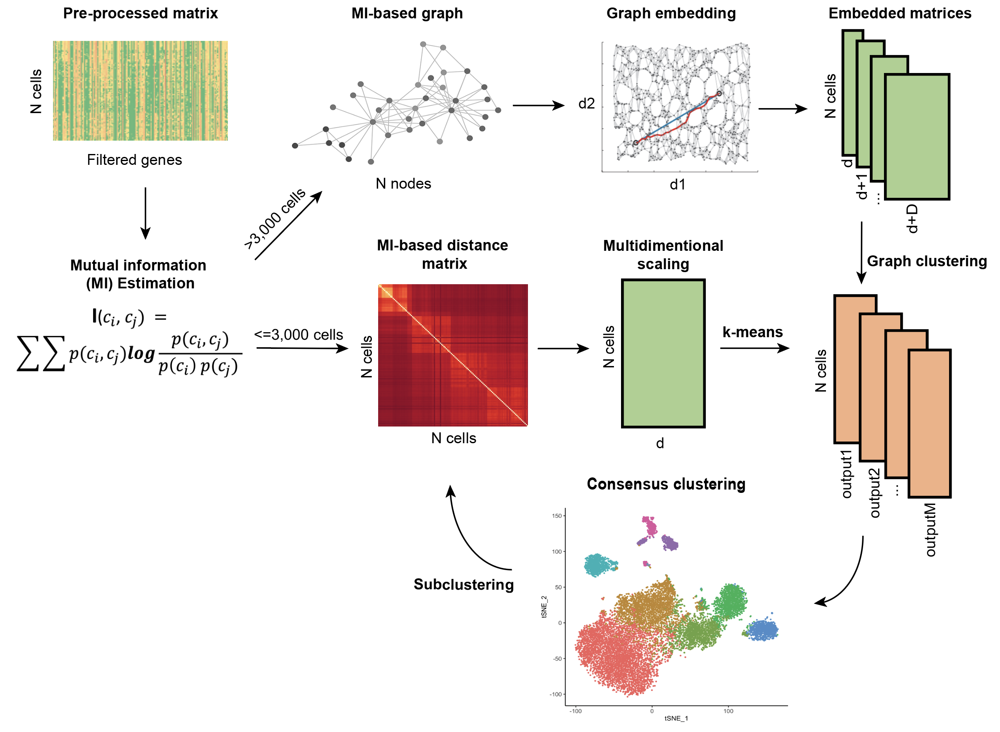
Using MICA
MICA consists of two modes named by the dimension reduction techniques: multi-dimensional scaling (MICA MDS) mode and graph embedding (MICA GE) mode. The MICA MDS mode is more robust for small datasets (less than 5000 cells by default) due to its global dimension reduction nature; the MICA GE mode works better for large datasets (more than 5000 cells) using a graph embedding approach to explore distant neighbor cells.
MICA GE mode
As mentioned above, the MICA GE mode reduces the dimensionality using the graph embedding method. It sweeps a range of resolutions to perform Louvain clustering for each resolution in the range. It also performs silouette analysis as an reference for the selecting of the optimal number of clusters.
MICA GE commands
The simplest way to MICA GE mode is to provide mica ge a preprocessed expression matrix file in either .h5ad or .txt format, and a path to an output directory.
mica ge -i ./test_data/inputs/10x/PBMC/3k/pre-processed/pbmc3k_preprocessed.h5ad -o ./test_data/outputs
The default number of workers to run in parallel is 1. To increase the number of workers (recommended), use -nw option.
mica ge -i ./test_data/inputs/10x/PBMC/3k/pre-processed/pbmc3k_preprocessed.h5ad -o ./test_data/outputs -nw 25
To increase the upper limit of the range of resolutions to 4.0, use -ar option; to decrease the step size for sweeping resolutions to 0.1, use -ss option.
mica ge -i ./test_data/inputs/10x/PBMC/3k/pre-processed/pbmc3k_preprocessed.h5ad -o ./test_data/outputs -nw 25 -ar 4.0 -ss 0.1
See below the description of other parameters.
Description of output files
Typical MICA GE mode output files include:
clustered.h5ad: a .h5ad file with preprocessed gene expression matrix, cell and gene meta information and clustering results included.
silhouette_avg.txt: a .txt file with four columns dimension, resolution, num_clusters and silhouette_avg. silhouette_avg is the average silhouette scores of all the cells. In theory, a higher silhouette_avg value indicates a purer clustering result. However, the peak silhouette_avg value is usually biased towards fewer number of clusters. It is recommended to check a few clustering results whose silhouette_avg values are close to the peak silhouette_avg value. For example, the peak silhouette_avg value for the PBMC14k dataset corresponds to the clustering results with 4 clusters; the clustering results with 7 clusters (known 7 sorted populations) have relatively smaller silhouette_avg values.
dimension resolution num_clusters silhouette_avg
24 2.71828 7 0.5391235947608948
24 3.00417 7 0.539175271987915
24 3.32012 6 0.5465611219406128
24 3.6693 6 0.5463876128196716
24 4.0552 6 0.5127292275428772
24 4.48169 6 0.512337863445282
24 4.95303 6 0.5124161839485168
24 5.47395 5 0.4783124029636383
24 6.04965 5 0.5457172393798828
24 6.68589 5 0.5456818342208862
24 7.38906 5 0.54740309715271
24 8.16617 4 0.6289374232292175
24 9.02501 4 0.6288570761680603
For each Louvain clustering resolution, MICA GE generates three output files.
clustering_UMAP_euclidean_24_3.6693.txt: a tab-delimited text file with four columns ID (cell barcode ID), X, Y (UMAP or tSNE coordinates), label (predicted clustering label). euclidean in the file name indicates the distance function used for the clustering on the embedded space, 24 is the number of reduced dimensions, 3.6693 is the Louvain clustering resolution.
ID X Y label
CACTTTGACGCAAT -4.6490397 14.635475 1
GTTACGGAAACGAA -4.099431 11.762381 1
AGTCACGACAGGAG -4.75394 3.9216163 4
TTCGAGGACCAGTA -5.1016173 4.8917494 4
CACTTATGAGTCGT -3.1518545 15.187379 1
GCATGTGATTCTGT -3.6067667 14.740933 1
TAGAATACGTATCG -4.634878 12.530589 1
clustering_UMAP_euclidean_24_3.6693.pdf: an UMAP plot file whose name schema is the same as above clustering label file.
silhouette_2_6_3.6693.pdf: a silhouette plot file, where 2 is the number of UMAP dimensions, 6 is the number of clusters.
Description of important parameters
MICA GE exposes a number of useful optional command-line parameters to the user. The particularly important ones are explained here, but you can always run mica ge -h to see them all.
--num-neighbors-mi
Number of neighbors to build mutual information-based nearest neighbor graph. The default value is 80. This parameter has a significant impact on the clustering performance and run time.
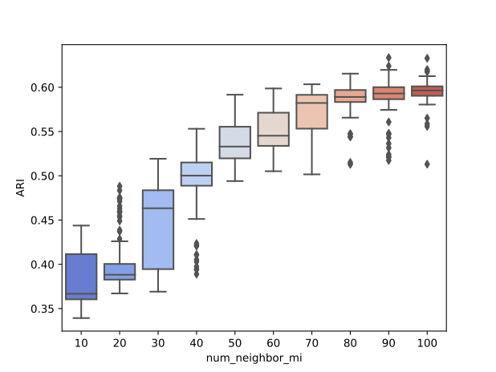 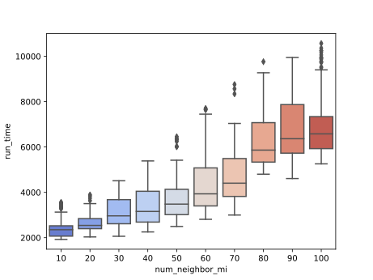
--num-walks
Number of workers to run in parallel. The default value is 1. We suggest using 25. The parallelizable steps are MI-based kNN, dimension reduction and UMAP visualization.
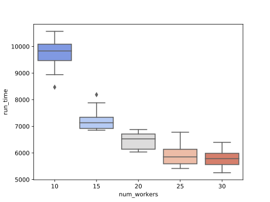 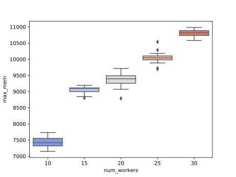
--num-neighbor-euclidean
Number of neighbors to build euclidean distance-based nearest neighbor graph after dimension reduction. The default value is 20. This parameter affects clustering performance and maximum memory usage.
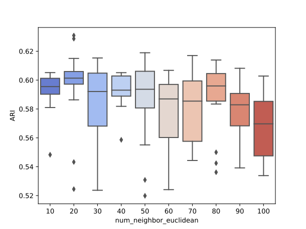 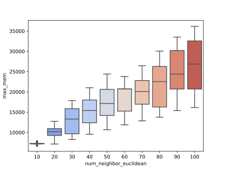
--num-walks
Number of random walks per source for the node2vec graph embedding. The default value is 110.
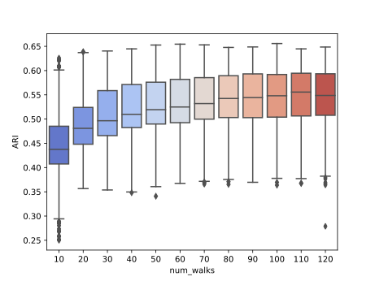
--window-size
Context window size of a random walk for the node2vec graph embedding. The default value is 10.
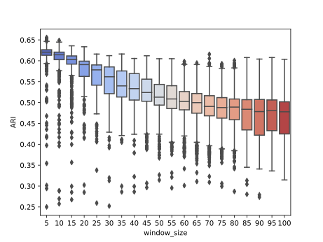
--hyper-p
Hyperparameter p controls the likelihood of immediately traveling back to a node recently traversed of a random walk. The default value is 2.8.
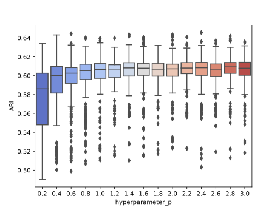
--hyper-q
Hyperparameter q controls the likelihood of walking away from the previous node of a random walk. The default value is 0.4.
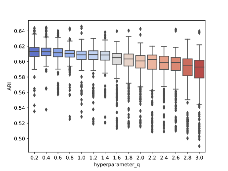
Note: all the parameter tunings with respect to clustering performance, run time and maximum memory usage are based on PBMC20k dataset.
Total running time
PBMC20k (20,000 cells)
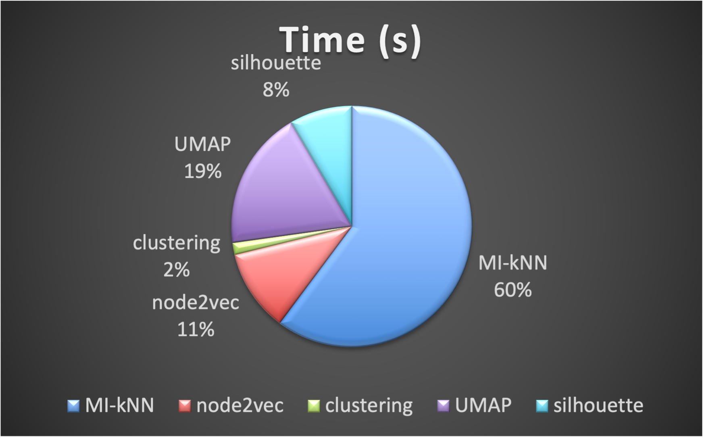
| Step | Time (s) |
|---|---|
| MI-kNN | 2,278 |
| node2vec | 418 |
| clustering | 60 |
| UMAP | 710 |
| silhouette | 319 |
| total | 3,785 (1.05h) |
Human Motor Cortex (76,533 cells)
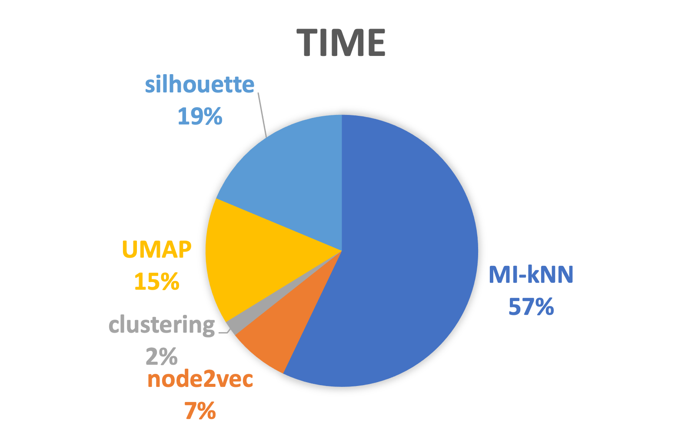
| Step | Time (s) |
|---|---|
| MI-kNN | 12,233 |
| node2vec | 1,553 |
| clustering | 401 |
| UMAP | 3,235 |
| silhouette | 4,005 |
| total | 21,427 (5.95h) |
MICA MDS mode
The MICA MDS mode performs stable on small datasets (including bulk datasets) but the memory usage grows quadratically as the number of cells increases. k-mean is the default clustering method, which requires users to specify the number of clusters (k in k-mean clustering). Due to the memory limitation, the workflow is implemented using common workflow language (CWL) for the scattering and gathering on the expression matrix.
MICA MDS commands
The simplest way to MICA MDS mode is to provide mica mds a preprocessed expression matrix file in either .h5ad or .txt format, a path to an output directory, a project name, and the number of estimated clusters (a number or a space-delimited list) of your dataset.
mica mds -i ./test_data/inputs/10x/PBMC/3k/pre-processed/pbmc3k_preprocessed.h5ad -o ./test_data/outputs -pn PBMC3k -nc 8 9 10
Description of output files
Typical MICA MDS mode output files include:
project_name_k10_umap_ClusterMem.txt: a tab-delimited text file with four columns ID (cell barcode ID), X, Y (UMAP or tSNE coordinates), label (predicted clustering label). project_name in the file name is given by the parameter -p, 10 is the number of clusters.
project_name_k10_umap.png: an UMAP plot file whose name schema is the same as above clustering label file.
project_name_dist.h5: a .h5ad file with the merged distance matrix.
project_name_reduced.h5: a .h5ad file with the MDS reduced matrix.
Description of Important Parameters
MICA MDS exposes a number of useful optional command-line parameters to the user. The particularly important ones are explained here, but you can always run mica mds -h to see them all.
-dk
The number of reduced dimensions used in k-mean clustering, array inputs are supported. The default value is [19].
--platform
Computing platform to run the CWL workflow. Can be local (cwltool) or lsf (cwlexec). The default value is local.
--config-json
LSF-specific configuration file in JSON format to be used for the CWL workflow execution. Required if use lsf platform.
--bootstrap
The maximum number of iterations per dimension to perform k-mean clustering. The default value is 10.
--thread-number
Number of workers used for multiple k-means iterations, usually equals to --bootstrap. The default value is 10.
--slice-size
The number of cells per sliced matrix for scattering and gathering parallelism. The default value is 1000.